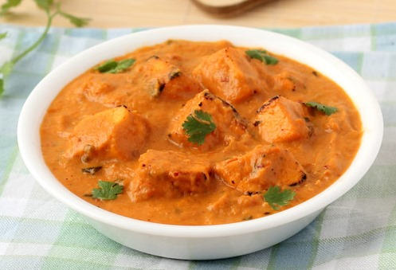

|  |
-
- ૨૦૦ ગ્રામ પનીર, ૧ ઈંચના ટુકડાઓમાં કાપેલું
- ૧ ટીસ્પૂન આદું-લસણની પેસ્ટ
- ૧/૪ કપ ઘટ્ટ દહીં (ચક્કા દહીં)
- ૧/૨ ટીસ્પૂન તંદૂરી મસાલા પાઉડર, વૈકલ્પિક
- ૧/૨ ટેબલસ્પૂન ધાણાજીરું
- ૧ ટીસ્પૂન લાલ મરચું પાઉડર
- ૧/૨ ટીસ્પૂન કસૂરી મેથી (સૂકા મેથીના પાન)
- ૧/૨ ટીસ્પૂન ચાટ મસાલા પાઉડર
- ૧ ટીસ્પૂન લીંબુનો રસ
- ૨ ટેબલસ્પૂન તેલ
- મીઠું, સ્વાદ અનુસાર
ગ્રેવી માટે:- ૧ મોટી એલચી
- ૧ ટેબલસ્પૂન સૂકા ધાણા
- ૧ ઇંચ લાંબો તજનો નાનો ટુકડો
- ૧ સૂકું કાશ્મીરી લાલ મરચું
- ૮-૧૦ કાજુ
- ૨ મોટી ડુંગળી, બારીક સમારેલી
- ૨ નાના ટામેટાં, બારીક સમારેલા
- ૧/૨ ટીસ્પૂન લાલ મરચું પાઉડર
- ૧/૪ ટીસ્પૂન હળદર
- ૧/૨ ટીસ્પૂન ગરમ મસાલા પાઉડર
- ૧/૨ ટીસ્પૂન કસૂરી મેથી
- એક ચપટી ખાવાનો લાલ રંગ, વૈકલ્પિક
- ૧/૪ કપ તાજું ક્રીમ
- ૧&૧/૨ ટેબલસ્પૂન તેલ અથવા બટર
- મીઠું, સ્વાદ પ્રમાણે
- ૧ કપ પાણી
- ૨ ટેબલસ્પૂન બારીક સમારેલા લીલા ધાણા
|
પનીર ટિક્કા બનાવવાની રીત:
|
પનીર ટિક્કા કેવી રીતે બનાવવા?
- સૌથી પહેલા, ટિક્કા બનાવવા માટે મેરિનેડ બનાવીએ. ઘટ્ટ દહીં (ચક્કા દહીં બનાવવા માટે દહીંને એક મલમલના કપડામાં કસીને બાંધીને એક થી બે કલાક માટે ટિંગાડો (લટકાવો)) અને એક બાઉલમાં વલોવો. તેમાં આદું-લસણની પેસ્ટ, તંદૂરી મસાલા પાઉડર, ધાણાજીરું, લાલ મરચું પાઉડર, કસૂરી મેથી, ચાટ મસાલા પાઉડર, લીંબુનો રસ અને મીઠું નાખીને મિશ્રણને બરાબર મિક્ષ કરો. મેરિનેડ તૈયાર છે.
- તૈયાર મેરિનેડમાં પનીરના ક્યુબસ (ટુકડા) નાખોં અને દરેક ક્યુબને સમાનરૂપે કોટ (લપેટવા) કરવા માટે ધીમેથી હલાવો. તેને એક થાળી અથવા પ્લાસ્ટિકથી ઢાંકો અને ઓછામાં ઓછા એક કલાક માટે રહેવા દો. સ્વાદ વધારવા માટે તમે ૪-૫ કલાક માટે પણ રાખી શકો છો. જો તમે એક કલાકથી વધારે સમય માટે તેને મેરિનેડ કરવા માંગતા હો તો તેને ફ્રીજમાં મૂકો.
- લાકડાની સ્ટીક (અથવા ટૂથપિક) ૧૦ મિનિટ માટે પાણીમાં પલાળો અને પછી તેને કપડાંથી લૂછી લો. મેરિનેડ કરેલા પનીર ક્યુબ્સને સ્ટીકમાં લગાવો અને પનીર ક્યુબ્સની ઉપર તેલ લગાવો. હવે સ્ટીકમાં લગાવેલા પનીર ટિક્કાને પકાવવાની જરૂર છે. તમે તેને બે રીતે પકાવી શકો છો. તમે નીચે આપેલી કોઈપણ એક રીતને અનુસરી શકો છો.
- એક નોનસ્ટિક તવામાં મધ્યમ આંચ પર ૨ ટેબલસ્પૂન તેલ ગરમ કરો. તેની ઉપર પનીર ક્યુબ્સ લગાવેલી સ્ટીક મૂકો અને તેને તેલમાં ગોલ્ડન બદામી રંગની થાય ત્યાં સુધી શેકો, ૩-૪ વાર સ્ટીકને બધી બાજુ પલટો જેથી દરેક સાઈડ બરાબર પાકી (ચડી) જાય.
- તેને રેસ્ટોરન્ટ જેવી બળેલી સુગંધ આપવા માટે એક ચીપિયાથી પનીર લગાવેલી સ્ટીકને પકડો અને ૩૦ સેકંડ માટે સીધી ગેસ પર રાખો. તેને એક થાળીમાં મૂકો.
- સ્ટીકમાં લગાવેલા પનીરને બાર્બેક્યું ગ્રીલ પર મૂકો અને લગભગ ૬-૮ મિનિટ માટે અથવા બધી બાજુ ગોલ્ડન બદામી રંગની થાય ત્યાં સુધી શેકો. તમે તેને ઓવનમાં પણ ગ્રીલ કરી શકો છો. તેને પ્રિહિટેડ ઓવનમાં (પહેલા ઓવનને ૧૦ મિનિટ માટે ગરમ કરી લો) ત્યાં સુધી શેકો જ્યાં સુધી પનીરની કિનારીઓ ગોલ્ડન બદામી રંગની થવા લાગે. તેને વધારે ન પકાવો.
|
પનીર ટિક્કા મસાલા માટે ગ્રેવી બનાવવાની રીત:
|
- એક કડાઈમાં મધ્યમ આંચ પર તેલ અથવા બટર ગરમ કરો. તેમાં મોટી એલચી, સૂકા ધાણા, તજ, સૂકું કાશ્મીરી લાલ મરચું અને કાજુ નાખોં અને એક મિનિટ માટે સાંતળો. તેમાં બારીક સમારેલી ડુંગળી નાખોં અને તેને હલ્કી બદામી રંગની થાય ત્યાં સુધી સાંતળો.
- તેમાં કાપેલા ટામેટાં અને મીઠું નાખોં અને બરાબર મિક્ષ કરો.
- ટામેટાંને નરમ થાય ત્યાં સુધી પકાવો, તેમાં લગભગ ૩-૪ મિનિટનો સમય લાગશે. ક્યારેક ક્યારેક વચ્ચે ચમચાથી હલાવતા રહો. તેમાં લાલ મરચું પાઉડર, હળદર અને ગરમ મસાલા પાઉડર નાખોં. બરાબર મિક્ષ કરો અને એક મિનિટ માટે પકાવો. ગેસ બંધ કરો અને મિશ્રણને એક થાળીમાં કાઢો. તેને ૪-૫ મિનિટ માટે ઠંડુ થવા દો.
- જ્યારે મિશ્રણ ઠંડુ થઈ જાય ત્યારે તેને મિકસર ગ્રાઈન્ડરના જારમાં નાખોં. તેમાં ૧/૨ કપ પાણી નાખોં અને પીસીને પ્યુરી બનાવો.
- તે જ કડાઈમાં પ્યુરી નાખોં. તેમાં ૧/૨ કપ પાણી નાખોં, ચમચાથી હલાવો અને મધ્યમ આંચ પર ઉકળવા માટે મૂકો. જ્યારે મિશ્રણ ઉકળવા લાગે ત્યારે કસૂરી મેથી (હાથથી મસળેલી) અને એક ચપટી લાલ રંગ નાખોં. તેને ચમચાથી હલાવો અને એક મિનિટ માટે પકાવો.
- તેમાં પહેલા બનાવેલા પનીર ટિક્કા નાખોં.
- ગ્રેવીને ધીમી આંચ પર ઘટ્ટ થાય ત્યાં સુધી પકાવો, તેમાં લગભગ ૩-૪ મિનિટનો સમય લાગશે. તેમાં તાજું ક્રીમ નાખોં અને બરાબર મિક્ષ કરો.
- ગેસ બંધ કરો અને શાકને પીરસવાના બાઉલમાં કાઢો. તેને લીલા ધાણાથી સજાવો અને ગરમા ગરમ પરોઠાની સાથે પીરસો.
|